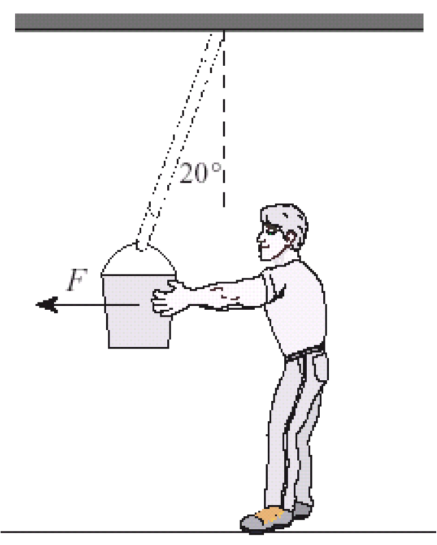

Peter, the concrete pusher, exerts a horizontal force F on a bucket of concrete that experiences a force of gravity of 120 Newtons so that the supporting rope makes an angle of 20° with the vertical.
The bucket is in equilibrium with all the forces acting on it balancing out. Determine the magnitude of the tension force in the supporting rope.